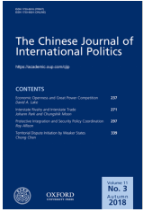
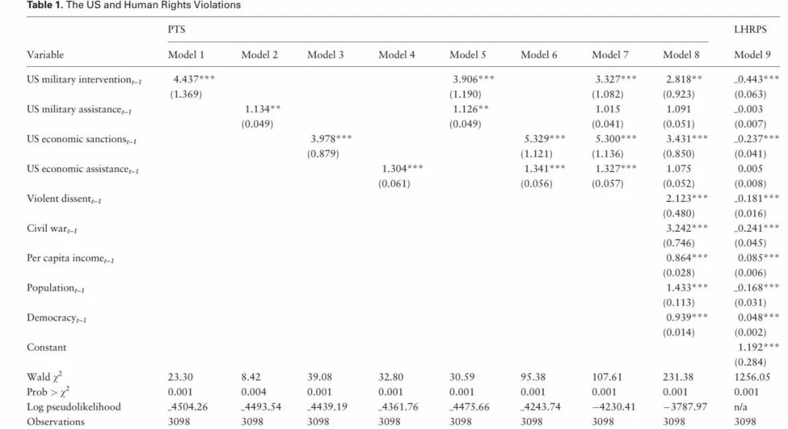

收录于合集

简 介
【作者介绍】 崔承焕（ Seung-Whan Choi ） ，美国伊利诺伊大学芝加哥分校政治学系教授； 帕特里克·詹姆斯 （ Patrick James ） ，美国南加利福尼亚大学国际关系学院教授。
【编译】 胡频
【校对】 庞林立、李代霓
【文章来源】 The Chinese Journal of International Politics，Volume 10 ，Issue 3, September 2017, Pages 331–356.

**
**
【期刊介绍】 The Chinese Journal of International Politics ，成立于2006年，是牛津大学出版社每季度出版的学术期刊，该期刊涵盖各种主题，包括：中国的外交政策、东亚的区域动态、军备控制和裁军军事、冲突和争端解决、全球化和国内变革等。根据2014年期刊引用报告，该期刊的影响因子为1.312。2017 年其影响因子上升为1.813。
【提纲】
**
**
-
摘要
-
新世纪的人权
-
美国行动与海外人权
-
提出假设
-
研究设计
-
实证结果
-
结论
************核心观点 ** ** ****** **** ******
美国的外交政策干预能否有助于改善他国的人权状况？这对外交政策领域的学者和政策制定者来说是至关重要的。然而，目前的学术研究中并没有在同一个模型中对美国外交政策工具进行对比。本文在关注美国外交政策所产生的影响时，向大规模数据分析迈进一步。依据 1975—2005年间144个国家的数据，将美国使用最广泛的军事干预、军事援助、经济制裁和经济援助四种外交政策工具放入同一模型进行评估与比较，探究美国常用的外交政策工具与海外人权之间的相关性。
************新世纪的人权 ** ** ****** **** ******
新世纪的国际政治与外交政策见证了人权意识的日益高涨。多种因素作用下，长期存在的主权规范也正演变为一种更为 “偶然”的性质，其中旨在促进人权的干预措施发挥了关键作用。是美国各官方机构利用各类外交政策工具促进自由进程，以布什和奥巴马为代表的总统亦将人权和善政作为美国行动的推进因素。
************美国的行动与海外人权
作者梳理出相关学者关于美国外交政策所使用的经济与军事工具的主要看法。（ 1）军事干预的特点大部分表现为人道主义干预，但是结果似乎好坏参半。(2)军事援助要反映美国的战略重点，其次才能被视为旨在改善人权。此外，也有研究显示美国的军事恶化了国外的人权状况。（3）经济制裁不会令受制裁的国家产生制度变化，反而会带来某些潜在和公认的不利因素。（4）经济援助与人权之间存在正相关关系，但经济援助对于促进人权的作用并不明显，充其量只是一个补充作用。
************提出假设
作者对前文中关于美国外交政策和人权的观点进行了理论化概括，主要包括三点：（1）无论使用经济手段还是军事手段，美国人权干预所产生的影响至多是中性的，往往是有害的。（2）相关学者的断言是正确的，无论美国使用何种干预工具，“大棒”可能比“胡萝卜”更糟糕。基于“大棒”的方法不太可能促进人权，因为他国的独裁者有可能以美国对国家主权或安全产生威胁为借口，采取更加强力的镇压措施。（3）没有任何政策工具能够始终如一地保护或促进人权。在美国希望在促进别国人权的情况下，它必须以当事国的现实条件为基础，并且倾向干预成功可能性大的国家。
基于以上的观点，作者提出两个普遍性假设： 首先， 霸权干预假说（ Hegemonic Intervention Hypothesis ） ，国外干预将对当事国的人权实践产生中性或有害影响。无论外交政策工具是经济还是军事，别国干预人权所产生的影响预计是中立的，即使不会产生负面影响。霸权干预假说并不意味着美国领导层的干预行为是出于恶意，只是其结果会不如人意。其次， 强制假说（ Coercion Hypothesis ） ，军事干预和经济制裁将比军事援助和经济援助对人权实践产生更多有害影响。军事援助和经济援助在一定程度上会对社会产生积极影响，但是军事干预和经济制裁无法产生正面效应以平衡负面伤害。
************研究设计 ** ** ****** **** ******
（ 一）样本选择。 为了验证霸权干预假说与强制假说，本文汇总了1975—2005年期间144个国家的数据，因而以国家—年份作为分析单位。一方面，由于经济合作与发展组织成员国的人权侵犯程度相对较低，因而作者认为它们不太可能成为美国外交政策议程的主体。由此，本文的测试样本为所有国家和非经合组织国家。另一方面，并非所有样本国家都存在滥用人权的状况，出于稳定性与偏差的考虑，作者所使用的样本仅限于从事侵犯人权行为的国家。
（二）衡量标准。 为了提高本文调查结果的可信度，作者采用了两种衡量侵犯人权的常规标准，分别为政治恐怖量表（the Political Terror Scale，缩写为PTS）和CIRI人权指数（CIRI physical integrity rights index）。
（ 三）变量选择。 本文将军事干预、军事援助、经济制裁和经济援助四种外交政策工具放入同一模型进行评估与比较。此外，作者还引入了暴力异议、内战、人均收入、人口规模与民主五种变量，用以衡量可能影响美国外交政策行动与人权状况之间的关系程度。
************实证结果
表1

基于表1数据，作者作出如下分析：第一，模型1-4中外交政策的工具均为霸权干预假说提供了证据支持。无论是军事手段还是经济手段，美国在他国的干预行为都将可能导致人权的恶化，任何军事手段都可能对人权保护产生不利影响。第二，模型5表明任何军事手段的人权干预产生不利影响，军事援助在恶化人权状况方面比军事干预更强。第三，模型6中的经济制裁与经济援助相比，后者更加有损于人权保护。第四，根据模型7计算的四个标准化系数的大小，在四种形式的外交政策干预中，经济援助似乎最大的催化因素。第五，模型8在加入五个变量因素后，显示出军事干预和经济制裁仍旧在人权维护中发挥主要作用，军事援助和经济援则不会产生重大影响。
由于美国外交政策工具产生的影响与时间长短有关，在考虑时间效应后，作者对对时间作出改变后后重新运作模型，得出表2（表略）。表2一方面证明霸权干预假说，美国的外交工具干预与他国的人权侵犯行为之间存在中性甚至负面联系。另一方验证了强制假说，即军事干预和经济制裁在人权干预中始终保持着重要意义。引入人权指数进行数据分析的表3（表略）同样验证了霸权干预假说与强制假说。
************结论 ** ** ****** **** ******
通过模型分析，作者认为 军事和经济形式的干预都可能 阻碍他国人权的保护与发展。 同时值得说明的是，无论美国的人权保护行为是否积极，其效果并不明显，甚至起负面作用。本文所得数据均支持霸权干预假说，强制假说亦得到了证实。在此基础上，作者进一步提出两个值得深入探索的因果机制。首先，以经济援助或军事援助为代表的援助似乎会加剧人权状况恶化；其次，经济制裁与军事干预会被独裁领导人利用，加强对民众的控制。一言概之， 美国常用的外交政策工具产生的效果弊大于利，因此在特定情况下，美国应该仔细地考虑其对外人权政策。
点击 阅读原文 可获取全文pdf版！
**
**
【更多阅读】 **
**
**
**
【一周预告】国政学人下周（10.22-10.26）文章推送安排预告！
【IR杂志】单极秩序下的不和平与美国外交政策：“连贯非理性体系”的后果
【SSCI·中东研究】漫比季(Manbij)合作路线图与美土关系的未来
【IA杂志· 斯托克斯】特朗普、美国霸权和自由国际秩序的未来
**【SSCI编译】特朗普的国家安全战略：“美国第一”遇上建制派
**
**【IS杂志·阿克顿】纠缠的升级：指挥和控制系统的弱点如何增加意外核战争的风险？
**
**【FA杂志】自由主义秩序的神话——历史偶然到传统观念的演变
**
**【外文编译·IS杂志】中美在东南亚的竞争
——权力转移还是竞争共存？
**
【外交事务】海伦·米尔纳：罗伯特·吉尔平的遗产对今天国际政治的启示
**
**

为方便学人及时接收高质量文章推送
别忘了把国政学人设置 星标 哦~
**
**